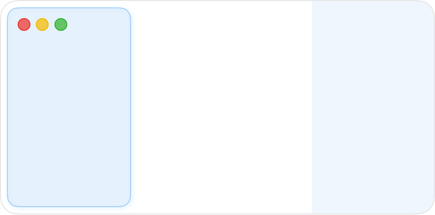
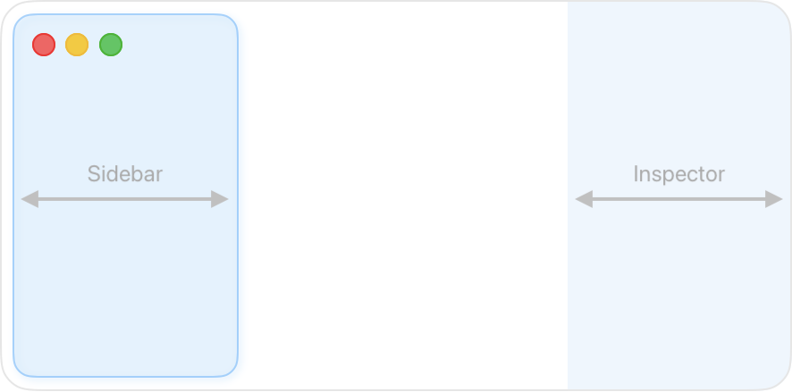
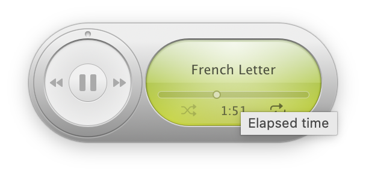
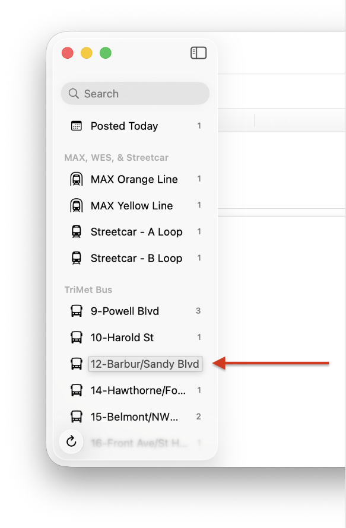
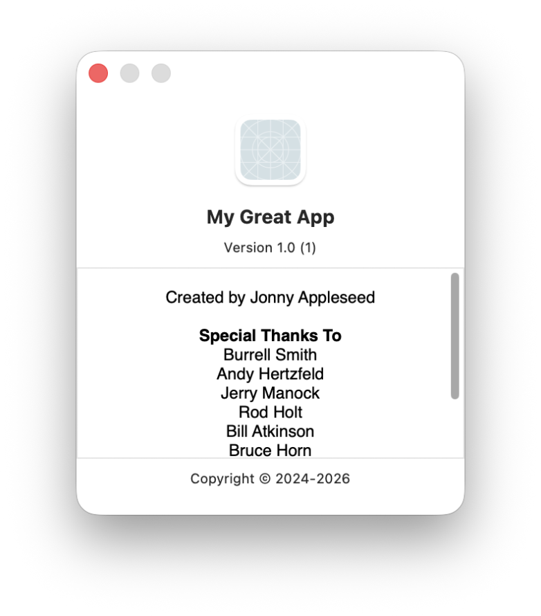
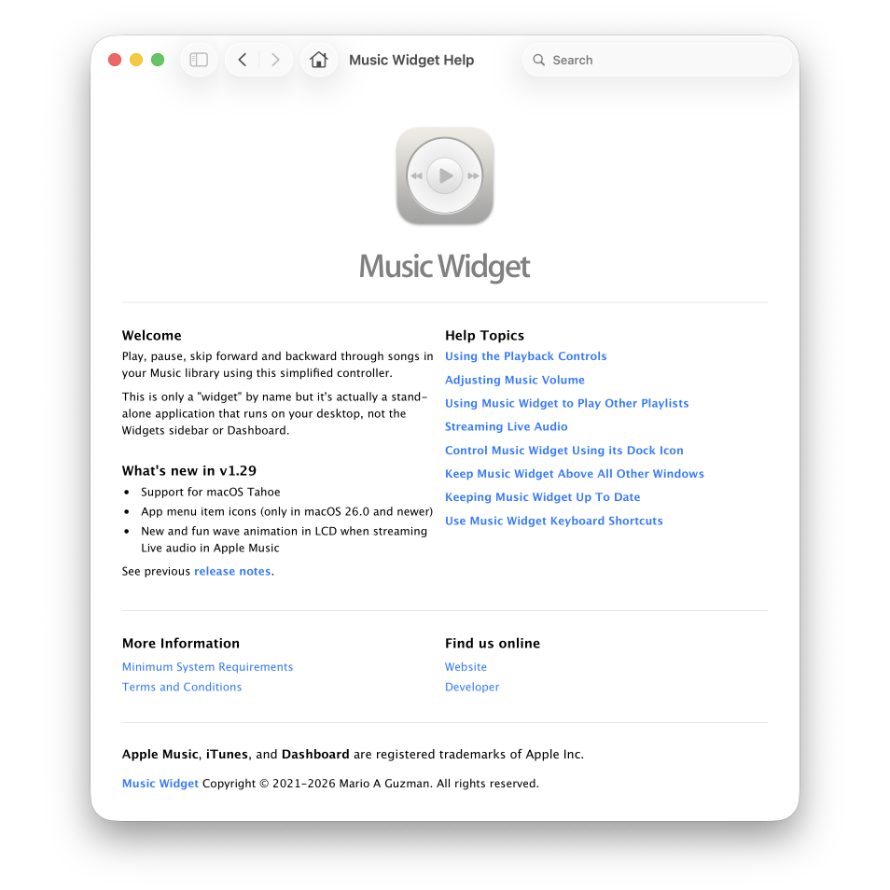
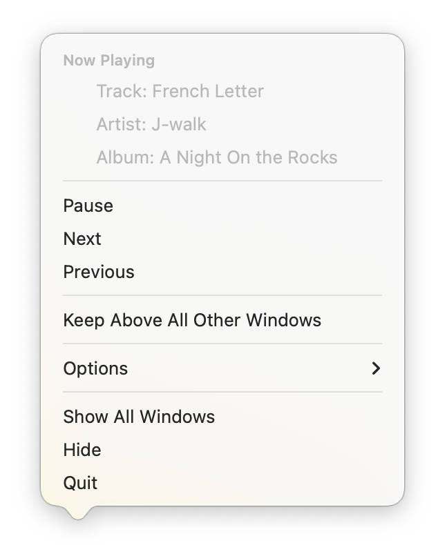

The Mac has a long tradition of thoughtful, human-centered details—small interactions and contextual touches that quietly help the user along the way. Over the years, Mac users have come to appreciate—and expect—these refinements as part of what makes an app feel truly at home on the platform.
The following is a collection of features and conventions available on macOS that can help bring that same level of polish to your own app. By embracing these long-standing Mac-isms, you can elevate the experience of your software and make it feel like a natural citizen of the Macintosh ecosystem.

Your application's window should have a minimum window size. Test your window's layout with sidebars (if available) open. Verify that your content is displayed as intended. Your toolbars, sidebars, and main user content should remain usable.
A good starting point is 480-600 pts for width and 320-400 pts for height.
Your application's window should have a minimum window size. Test your window's layout with sidebars (if available) open. Verify that your content is displayed as intended. Your toolbars, sidebars, and main user content should remain usable.
A good starting point is 480-600 pts for width and 320-400 pts for height.

If your application has a sidebar and/or an inspector sidebar, they need sensible minimum and maximum width limits.
A good starting point is 225-275 pts as a minimum width and 350-400 pts for a maximum width.
Of course, some applications may require not having a maximum width, however, if this is the case, you may need to rethink your application layout.
For more information on sidebars, read Sidebar Guidelines.
If your application has a sidebar and/or an inspector sidebar, they need sensible minimum and maximum width limits.
A good starting point is 225-275 pts as a minimum width and 350-400 pts for a maximum width.
Of course, some applications may require not having a maximum width, however, if this is the case, you may need to rethink your application layout.
For more information on sidebars, read Sidebar Guidelines.

The majority of controls in your application should have tooltips; Toolbar items, buttons, checkboxes, etc. If you are thinking about placing a label explaining your control (say, in Settings), try a tooltip instead. Tooltips should also be added to any free-standing symbols relaying temporary statuses.
The majority of controls in your application should have tooltips; Toolbar items, buttons, checkboxes, etc. If you are thinking about placing a label explaining your control (say, in Settings), try a tooltip instead. Tooltips should also be added to any free-standing symbols relaying temporary statuses.

Oftentimes, labels cannot wrap to multi-line labels resulting in truncation. These can be found in Lists, Tables, and Outline views. For these labels, you need to enable Auto-expansion Tooltips for the label.
Auto-expansion Tooltips are similar to standard tooltips but instead of displaying a different string, they will display their label's string in their entirety on mouse hover. Enable this option by setting allowsExpansionToolTips to true on NSTextField. This is not available in SwiftUI.
Oftentimes, labels cannot wrap to multi-line labels resulting in truncation. These can be found in Lists, Tables, and Outline views. For these labels, you need to enable Auto-expansion Tooltips for the label.
Auto-expansion Tooltips are similar to standard tooltips but instead of displaying a different string, they will display their label's string in their entirety on mouse hover. Enable this option by setting allowsExpansionToolTips to true on NSTextField. This is not available in SwiftUI.

Did you know, if you add a Credits.rtf file to your Xcode project, the application will pick it up and display its contents in the default About window when opened?
Since it is an rtf file, any custom formatting and links will display as well. With Xcode, you can also provide localized versions.
Just make sure that it is added to your project's "Copy Bundle Resources" stage under "Build Phases" in Xcode.
Did you know, if you add a Credits.rtf file to your Xcode project, the application will pick it up and display its contents in the default About window when opened?
Since it is an rtf file, any custom formatting and links will display as well. With Xcode, you can also provide localized versions.
Just make sure that it is added to your project's "Copy Bundle Resources" stage under "Build Phases" in Xcode.
Spotlight is often used as an app launcher. Type the name of the app, and hit Return on your keyboard when your app comes up as a search result. However, you can add keywords to your app's Info.plist so that searching becomes more natural. Add MDItemKeywords with a string value of comma-delimited words.
Apple Music, for example, has keywords such as "Apple Music", "iTunes", and "Radio" so that Spotlight surfaces it as a result should any of these words be the query.
Someone making a client for Mastodon would probably add "Mastodon" or someone making an Email client may add "Email" to their list of keywords.
If you want to see if an app uses MDItemKeywords, simply "Get Info" on the app and look under "More Info" – there will be a section called "Keywords."

Help Books provide quick and local access to useful topics for your users. Help Books aren't necessarily manuals but rather a collection of topics. Each topic corresponds to a main action your user may do in your application.
For example, in a music jukebox application, you might find a topic on "Organizing your Music into Playlists" or "Importing Music Into Your Library."
Help Books are also indexed by macOS so that they can be searched in the Help menu's search bar, Spotlight, or even within the Tips application.
For information on creating a Help Book, read Authoring macOS Help Books in 2020 (and beyond).
Help Books provide quick and local access to useful topics for your users. Help Books aren't necessarily manuals but rather a collection of topics. Each topic corresponds to a main action your user may do in your application.
For example, in a music jukebox application, you might find a topic on "Organizing your Music into Playlists" or "Importing Music Into Your Library."
Help Books are also indexed by macOS so that they can be searched in the Help menu's search bar, Spotlight, or even within the Tips application.
For information on creating a Help Book, read Authoring macOS Help Books in 2020 (and beyond).

Leverage your app's Dock icon (at runtime) to give users quick access to global actions or status. Overridefunc applicationDockMenu(_ sender: NSApplication) -> NSMenu? on NSApplicationDelegate
to provide users with actions the app can perform at a global level.
For example, Mail provides "Get New Mail", "New Viewer Window", and "New Message." These are convenient commands a user can perform without having to bring Mail to the forefront first.
Additionally, you can also override the icon at runtime by settingvar applicationIconImage: NSImage! on NSApplication.
A media playback app may display the Play, Pause, or Stop symbols overlaid the app icon depending on the player's state.
This is how Calendar updates its Dock icon to show the current date.
To provide a Dock icon that updates or a Dock menu when the app is not running, read my NSDockTilePlugin tutorial on GitHub.
Leverage your app's Dock icon (at runtime) to give users quick access to global actions or status. Overridefunc applicationDockMenu(_ sender: NSApplication) -> NSMenu? on NSApplicationDelegate
to provide users with actions the app can perform at a global level.
For example, Mail provides "Get New Mail", "New Viewer Window", and "New Message." These are convenient commands a user can perform without having to bring Mail to the forefront first.
Additionally, you can also override the icon at runtime by settingvar applicationIconImage: NSImage! on NSApplication.
A media playback app may display the Play, Pause, or Stop symbols overlaid the app icon depending on the player's state.
This is how Calendar updates its Dock icon to show the current date.
To provide a Dock icon that updates or a Dock menu when the app is not running, read my NSDockTilePlugin tutorial on GitHub.
I enjoy creating content that helps other Mac developers ship their best possible work. If you find this content useful and if you're able to, consider perhaps buying me a coffee. But if not, no worries! I'd appreciate you at least sharing this document with your fellow Mac developers posting it on social media! Thank you!
Reach out via Mastodon if you have suggestions that would improve this article.
Mastodon